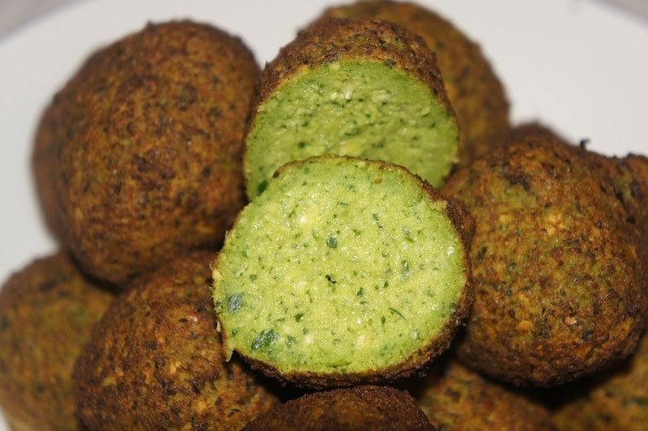
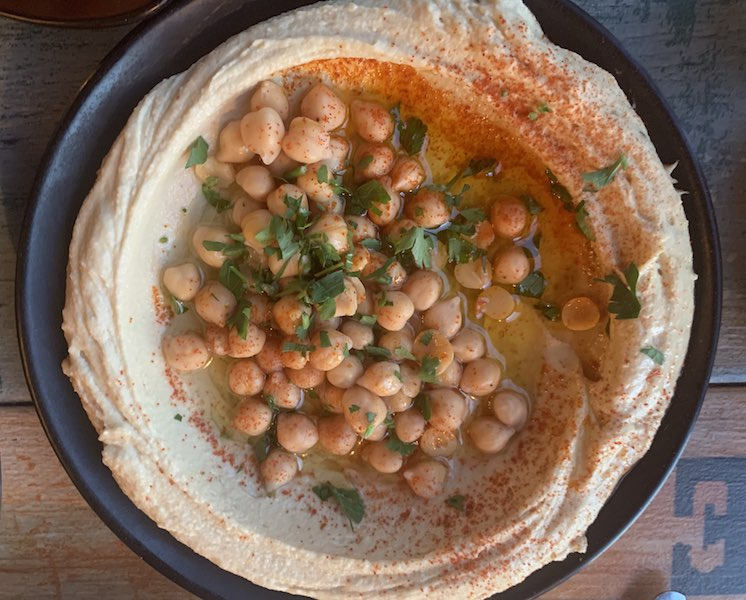
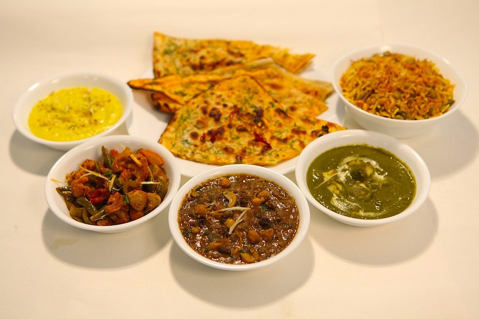
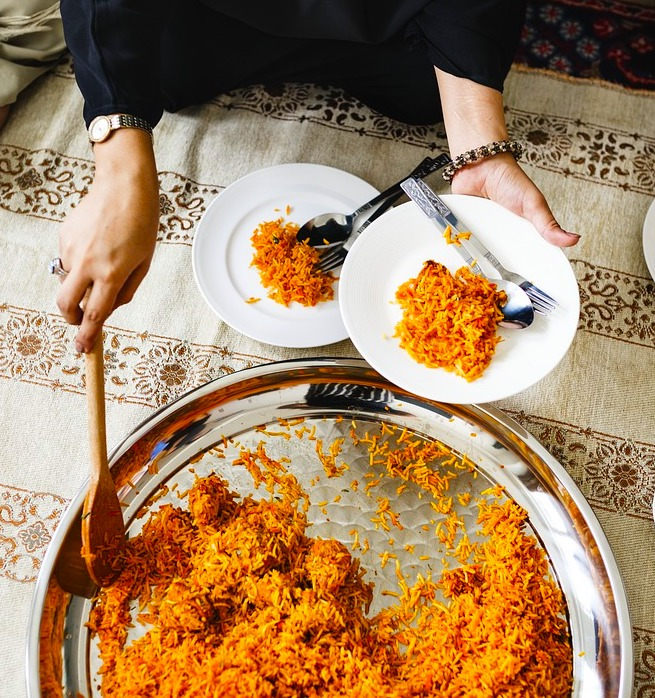

FoodieFanatix Alert !
In this episode we are taking a trip aroud the world. Have you ever wondered what people around the world loved to it? Well, you don't have to wondered no more because I got you covered.
Now let's answer a few questions
What is the most eaten food in the world?
The most eaten food in the world is American hamburger, Italian pizza, Belgium- French fries, Middle Eastern falafel, and Turkish doner kebab.
TURKISH DONER KEBAB
The top 10 best food in the world is Italian pizza,American burger, Turkish doner kebab,MiddleEasternhummus, Japanese sushi,Chinese dim-sum, Indian chicken tandoori, Mexican mole, Vietnamese spring rolls, and Russian caviar.
What are the most popular ethnic foods in the world?
The most popular ethnic foods in the worldare Italian pizza,Indian thali,and chicken tandoori,Japanese sushi and sashimi,MiddleEasternhummus,Mexican mole, burritoand tacos,American burger, Turkish doner kebab,Chinese dim-sum…
What is the most popular food in the world?

Among the most popular food in the world are Italian pizza, pasta and spaghetti, American burger, Japanese ramen soup, sushi and sashimi, Indian chicken tandoori, thali and biryani rice, Vietnamese pho and spring rolls, Mexican burrito, and tacos …
What is the most delicious food in the world?
Considering the popularity, the most delicious food in the world are Italian pizza and pasta dishes,American burgers,Turkish doner kebab, Greek gyro, MiddleEasternhummus, Spanish paella, Mexican mole, burritoand tacos, Indian thaliand chicken tandoori, Japanese sushi…